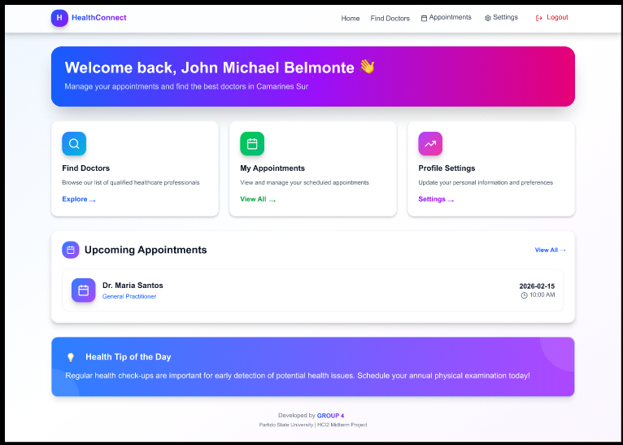
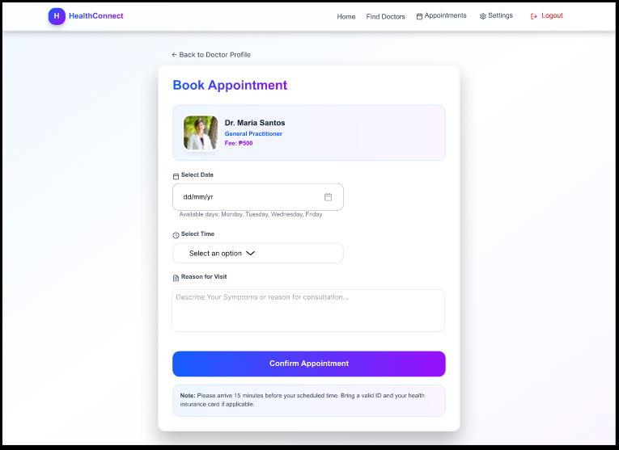

Prototype Walkthrough
A visual tour of the prototype's key screens and interaction flows evaluated during testing.
Landing / Login Screen
The entry point of the prototype. Users authenticate via a login form. This screen was identified as having feedback issues during testing — no confirmation was shown after login.

Dashboard / Home
The main hub displaying key information. The dense layout was flagged as a usability concern under H8: Aesthetic & Minimalist Design.

Search Doctor
The first step to look for a specific doctor that the user needs to book an appointment.

Core Feature Flow
The primary task flow users were asked to complete. Navigation inconsistencies were most apparent at this stage of interaction.

Video Demonstration
Reflections
Personal insights from each team member on the evaluation process and learnings.
John Michael Belmonte
Conducting the heuristic evaluation opened my eyes to how small design decisions create large usability barriers. I learned to evaluate systems not just as a developer, but as a user.
Jessica Vipinoso
Facilitating usability tests taught me the importance of neutral observation. Watching real users interact with our prototype was both humbling and incredibly informative.
Jommel Pahuwayan
Analyzing data and finding patterns across multiple respondents was challenging but rewarding. The numbers told a clear story about where our design fell short.
Earl Francis Salvo
Nielsen's heuristics gave us a shared vocabulary to discuss design problems. I'll carry this framework into every future project as a first-pass evaluation tool.
Jezel Dominguez
Documenting every step made me realize how important traceability is in UX research. Good documentation transforms findings into actionable improvements.
Additional Findings
Supplementary observations and insights that emerged during the evaluation process.
Color Contrast Issues
Several UI elements did not meet WCAG AA contrast ratio requirements (4.5:1 for normal text), particularly in the secondary navigation and footer components.
Responsive Breakpoints
The prototype was not fully responsive at mobile viewport widths (< 480px), resulting in horizontal overflow and overlapping elements on smaller devices.
Keyboard Navigation Gaps
Several interactive elements were unreachable via keyboard-only navigation, posing accessibility barriers for non-mouse users.
Slow Load on Media Pages
Pages with embedded images and media showed noticeably longer load times, impacting perceived system responsiveness during testing.